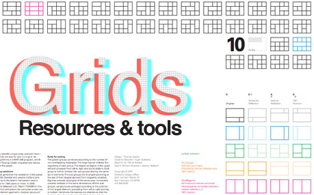
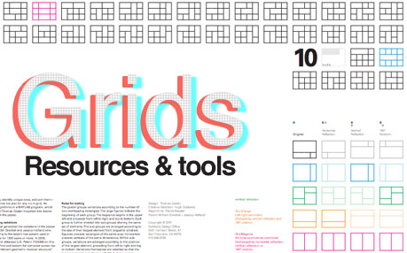

1.What is grid based design?
Nowadays, grid-based design or layouts have become very popular in web design.
A grid is a series of intersecting horizontal and vertical lines that serve as guides to place elements in a design.
To put it in simple words, grids are a system for creating order among elements in a website.
Grid helps users to better understand the information as it is shown in a more structured and logical way.
 

2.Whats all the hype about responsive webpages?
There are a variety of devices, and screen size of the devices are diffrent.
Responsive webpages makes your web page look good on all devices such as laptap, desktop, and mobile phones.
Screen sizes are always changing, so it is important that webpages can adapt to any screen size.
Responsive webpage responds to the needs of the users and the devices they are using.